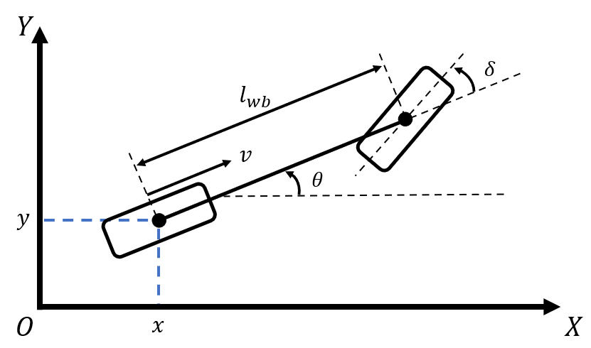
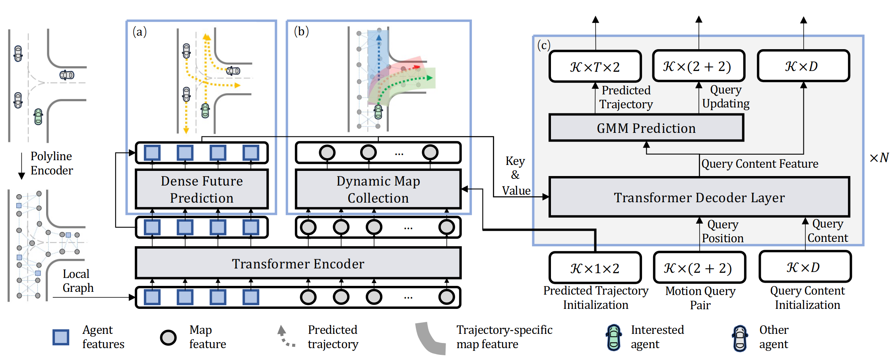

预测¶
预测模块介绍¶
预测在自动驾驶中发挥着关键作用，可以确定道路代理可能采取的行动以确保安全导航。在本文档中，我们概述了当前的方法，从简单的 恒速运动 预测器到更先进的运动变换器 Motion Transformer。
恒速运动预测器¶
概述¶
等速模型是最基本但有效的预测方法[1]，假设实体以恒定速度继续其当前轨迹。在这里，我们通过 Runge-Kutta 4 (RK4) 积分对运动学自行车模型进行正向模拟，假设没有加速度和转向角。
适用性和局限性¶
- 适用性：非常适合运动相对线性的高速高速公路。
- 局限性: ：在城市或拥挤的地区，该模型可能无法捕获代理的不稳定运动。
数学模型¶

控制自行车运动模型的主要方程是：
-
位置更新: 车辆后轮的空间坐标随时间更新 t 到时间 t + 1 作为
x(t+1) = x(t) + v(t) \cos(\theta(t)) \Delta ty(t+1) = y(t) + v(t) \sin(\theta(t)) \Delta t -
航向更新：自行车的航向更改为
这里
- (x, y) 代表车辆的位置；
- \theta 是车辆的航向；
- v 表示车辆的速度；
- \delta 是前轮的转向角；
- l_{wb} 为轴距，即前后轴之间的距离；
- \Delta t 是时间步长。
然后应用RK4方法进行前向模拟，以提高短期内的预测精度。
示例用例¶
- 公路和高速公路。
- 障碍物最少的开放区域。
在 ISS 中，采用等速模型来预测结构化道路环境中的运动。
Motion Transformer¶
概述¶
Motion Transformer[2]是一种最先进的模型，它考虑历史数据来预测未来的轨迹。该框架将运动预测建模为全局意图定位和局部运动细化的联合优化。除了考虑道路结构的全局信息之外，该方法还通过适应可学习的运动查询来合并不同的运动模式。Motion Transformer的整体结构如下图所示。

为什么选择 Motion Transformer?¶
较简单的模型缺乏复杂环境所需的细微差别。运动变换器考虑了历史轨迹，使其在复杂的场景中具有优势。
架构和组件¶
- 注意力机制：权衡不同历史数据点的重要性。
- 编码器-解码器结构：编码器处理输入序列，而解码器产生预测轨迹。
输入/输出详细信息¶
- 输入：历史轨迹数据。
- 输出：用置信区间预测未来轨迹。
实施路线图¶
- 维护现有的等速运动预测器以确保基本功能。
- 了解并设置 Motion Transformer 的神经网络。
- 收集和处理数据集并进行训练和模拟测试。
- 集成到当前的管道中并确保持续的模型优化。
参考文献¶
- Schöller C, Aravantinos V, Lay F, et al. "What the constant velocity model can teach us about pedestrian motion prediction." In IEEE Robotics and Automation Letters, 2020, 5(2): 1696-1703.
- Shi S, Jiang L, Dai D, et al. "Motion transformer with global intention localization and local movement refinement." In Advances in Neural Information Processing Systems, 2022, 35: 6531-6543.